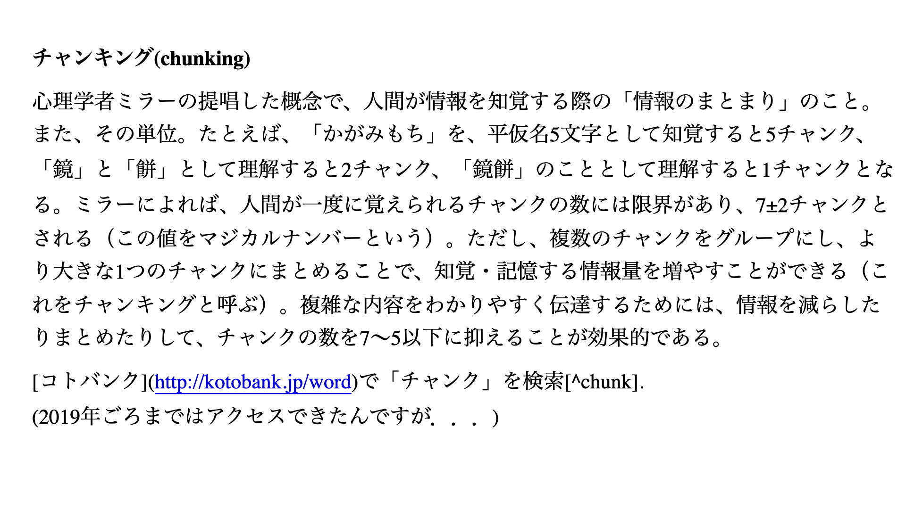
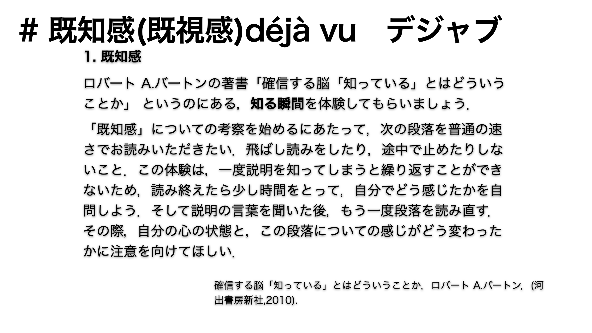
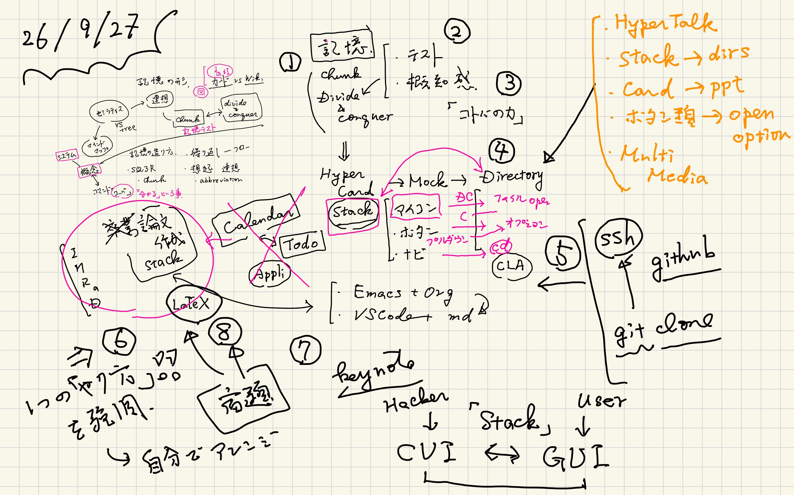
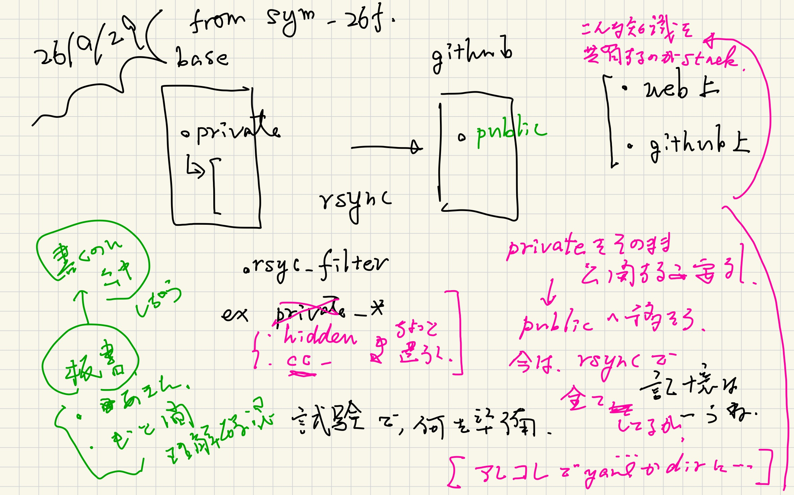

Method : chunking, deja vu
Table of Contents
prev_button up_button next_button
1. chunking, dejavu, HyperCard
 |
 |
 |
知識を獲るには，divide and conquer (分割統治とも訳されますが，各個撃破がしっくりきます) が基本戦略です． でもちっちゃいのが積み重なってくると， 知識が干渉し始めて混乱します． 整理が必要になります． 整理のコツを言葉で表すとchunkingとdeja vuです． chunkingはまとまった知識を覚える人間の癖を 心理学者が解き明かした知恵です． それをまとめる時には deja vuで示したようにコトバで概念をまとめます．
2. 卒業論文って何？
これは卒業研究の本質に深く根ざしています． それらの歴史的な知識をまとめたのが次の Geminiとの問答です．
3. preparation notes
 |
 |
|